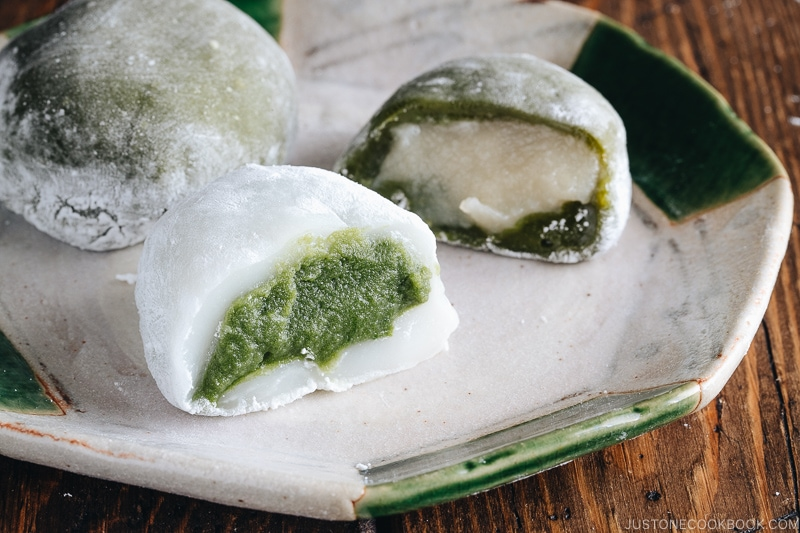

Home
Mochi

Description
Mochi is a sweet, chewy rice treat that hails from Japan. Serve these small, sweet cakes with a matcha hot chocolate or simply green tea. Use your leftover glutinous rice flour to make tang yuan, Chinese glutinous rice balls served for Lunar New Year that are similar to mochi (and are delicious year-round).
Traditionally made from cooked and pounded rice, mochi are also easily made with rice flour. Mochi are often stuffed—which technically means they're called daifuku—with sweet and savory fillings. Here, each ball is filled with a sweet red bean paste, but you're just as likely to see ice cream, a matcha green tea filling, or black sesame paste inside mochi. (Though the ice cream version is a more recent invention from Los Angeles.) While milk is typically not used, it gives the mochi added richness without being overwhelming. If you want a dairy-free version, use coconut milk instead.
Ingredients
- 1 (15.16-oz.) can sweetened red beans, mashed into a paste
- 1 c. sweet glutinous rice flour (about 5 oz.)
- 1/4 c. plus 2 tbsp. granulated sugar, divided
- 1 c. whole milk
- 2 tbsp. kinako powder (roasted soy bean powder)
- 1/4 c. cornstarch, divided
Steps
- Fill a small bowl with water. Dab some water with your fingers to scoop 1 tablespoon mashed beans and shape into a ball. Transfer to a plate. Repeat until you have 10 balls. Cover in plastic wrap; set aside.
- In a medium heatproof bowl, whisk rice flour and 1/4 cup sugar. Whisk in milk until mixture is smooth.
- Cover bowl with plastic wrap and microwave in 1-minute intervals, mixing with a wooden spoon after each, until dough is more translucent, smooth to touch, and not grainy, about 5 minutes total.
- In a small bowl, mix kinako powder and remaining 2 tablespoons sugar; set aside.
- Dust a work surface with 2 tablespoons cornstarch. Place dough on work surface. Lightly coat a wooden spoon with cornstarch. Using spoon, knead dough until it becomes more elastic without breaking, about 2 minutes.
- Dust your hands with cornstarch to shape dough into a 10"-by-2" log. If dough becomes too sticky, dust surface and hands with more cornstarch. Using a sharp knife, cut log into 10 pieces.
- Working one piece at a time, using your hands, flatten dough to a 2 1/2" disc. Place 1 bean ball in the center of dough. Pinch to seal dough around bean ball, then roll in reserved kinako mixture. Arrange mochi seam side down on a plate. Repeat with remaining 9 bean balls.
- Make Ahead: Mochi can be made 3 days ahead. Transfer to an airtight container and store at room temperature. Do not refrigerate or mochi will become hard.